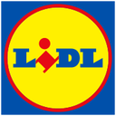

Updated 26 November 2026
Best Supermarkets & Groceries in Malta
Malta's supermarkets side by side: price level, a measured basket comparison, loyalty schemes, delivery, opening hours and what each one does best.
Quick answer
We compare 6 supermarkets & groceries from 6 providers in Malta, checked 26 November 2026. Price levels are a guide, not a promise: prices change every week and by item. The basket comparison is one independent snapshot of 10 everyday items from the stores' own websites (Lidl, Greens and Smart publish no searchable online catalogue, so they are not in it). Lowest price level: Lidl Discount supermarket at €.
Full comparison
| Provider | Price level | Basket vs cheapest | Stores | Loyalty | Delivery | Opening hours | Best for |
|---|---|---|---|---|---|---|---|
 Lidl | € | - | 10 | No loyalty card | In store only | Varies by store | Lowest prices overall, own brands, weekly offers |
| PAVI / PAMA | €€ | 0.00% | 2 | Shared points card | Via Wolt | Usually 7:00 to 21:00 | Fresh produce, butcher and fish counters, big stores with parking |
| Welbee's | €€€ | 15.70% | 10 | App points or cashback, partner brands | Via Wolt | Varies by store | Convenient town locations, bakery, imported brands |
| Greens | €€€ | - | 4 | - | Via Wolt | 7:00 to 00:00 daily | Widest range, imported and organic products, late opening |
| Scotts | €€€ | 23.30% | - | Reward card | - | Varies by store | Popular with expats, bakery |
| Wolt Market | - | - | - | - | Delivery in about 40 to 50 minutes | 7:00 to 00:00 daily | Fast delivery, late evening top-ups |
- Lidl Discount supermarket: 10 stores: 9 in Malta, 1 in Gozo. Malta's most popular supermarket in MaltaToday surveys. No online catalogue, so it is not in the basket comparison.
- PAVI / PAMA Pavi (Qormi), Pama (Mosta): Cheapest of the stores in an independent 10-item basket comparison (€34.16). Loyalty points are shared between PAVI and PAMA.
- Welbee's Neighbourhood supermarkets: €5.35 (15.7%) more than PAVI/PAMA on the same 10-item basket. Spending €50 to €99.99 earns €3 cashback or 400 app points (welbees.mt).
- Greens Greens Supermarket: Stores in Swieqi, Mriehel, Qormi and Gozo, plus Little Greens in Sliema. Calm Hours on selected afternoons.
- Scotts Scotts Supermarket: €7.95 (23.3%) more than PAVI/PAMA on the same 10-item basket.
- Wolt Market Online-only grocery (San Gwann, Qormi): Delivery times and fees depend on your address and the time of day.
How we rank
Price levels are a guide, not a promise: prices change every week and by item. The basket comparison is one independent snapshot of 10 everyday items from the stores' own websites (Lidl, Greens and Smart publish no searchable online catalogue, so they are not in it). How we rank →
Questions and answers
Which supermarkets & groceries has the lowest price level?
Lidl Discount supermarket has the lowest price level at € (checked 26 November 2026).
How does CompareMalta.ai rank supermarkets & groceries?
Price levels are a guide, not a promise: prices change every week and by item. The basket comparison is one independent snapshot of 10 everyday items from the stores' own websites (Lidl, Greens and Smart publish no searchable online catalogue, so they are not in it).
How often are these supermarkets & groceries updated?
Every day. Our feeds read the providers' websites each morning; this page was last rebuilt on 26 November 2026.
Sources
Figures are taken from each provider's own website.